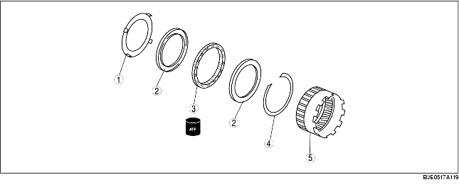

1. Utför förkontrollen före isärtagningen.
(Se Främre ringhjul och envägskoppling.)
2. Ta isär i den ordning som tabellen anger.
3. Montera i omvänd ordning jämfört med demonteringen.

• Demontera hållaren för envägskopplingen genom att knacka på den med en flat skruvmejsel etc, enligt bilden.
1. Montera låsringen.
2. Montera envägskopplingen i främre planetväxelns ringhjul i pilens riktning (på envägskopplingen) som visas på bilden.
3. Montera lagerbanan.
4. Montera hållaren för envägskoppling.